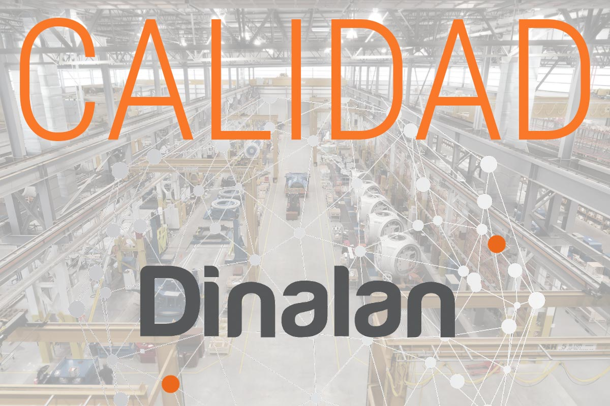

EXPERIENCIA
Desde 1992
DINALAN está especializada en el desarrollo de soluciones avanzadas de control y regulación de procesos industriales
EMPRESA
Automatización y control industrial
Nuestro objetivo es llegar a formar parte del equipo de desarrollo e implementación de las empresas para asesorar, integrar y mantener los proyectos internos desarrollados.

GARANTÍA
Calidad y transparencia
Dinalan, con el objetivo de conseguir plena satisfacción de los clientes, realiza pruebas en oficina y en casa del cliente. Certificación de calidad ISO 9001:2015.
PROYECTOS REALIZADOS
Referencias o clientes
DINALAN es una de las empresas más preparadas en el sector automovilístico y otros, ofreciendo asesoramiento y apoyo industrial.